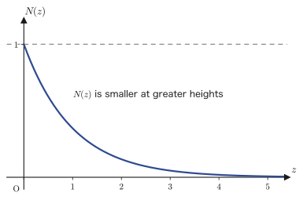
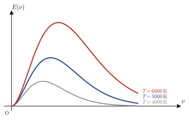
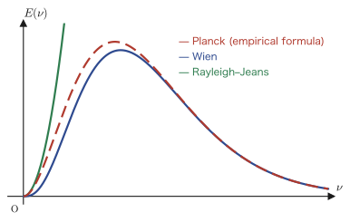
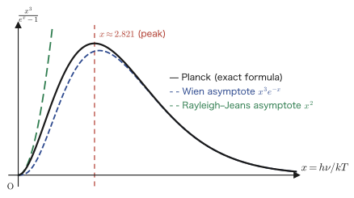

Chapter 49Statistical Mechanics and Black-Body Radiation — The Boltzmann Distribution and Planck's Radiation Law
In the preceding chapters we solved concrete partial differential equations, such as the wave equation, the heat equation, and the Schrödinger equation, by the method of separation of variables. This chapter is a little different. The star here is not a partial differential equation itself but rather just a single formula, the exponential function $e^{-E/kT}$. This formula is called the Boltzmann distribution, and it expresses a law at the heart of statistical mechanics: “the probability that a system in thermal equilibrium at temperature $T$ is found in a state of energy $E$ is proportional to $e^{-E/kT}$.” A surprisingly wide range of phenomena, from the motion of a single gas molecule to the energy distribution of the light that fills the universe (black-body radiation), can be explained from this one formula.
In this chapter we first introduce the Boltzmann distribution through a familiar problem: how gas molecules are distributed in a gravitational field (why does the air get thinner as you climb a mountain?). Next we trace the history of how the physicists of the late nineteenth century tackled the question, “How does the energy of light confined in a cavity (black-body radiation) depend on the frequency $\nu$?” Remarkably, a theory obtained merely by combining the classical physics of the nineteenth century (the kinetic theory of gases and electromagnetism), namely the Rayleigh–Jeans law, had a fatal defect: at high frequencies its answer diverges to infinity (the ultraviolet catastrophe). To resolve this contradiction, Max Planck introduced a hypothesis that was extremely bold for its time (the quantum hypothesis): “light exchanges energy not in continuous amounts but only in discrete amounts (quanta) in units of $h\nu$.” It is precisely Planck's radiation law, derived from this hypothesis, that is the starting point of twentieth-century quantum mechanics. The idea of the “quantization of energy” that we treated in Chapters 45–48 has its historical origin here.
The goal of this chapter is that, starting from the Boltzmann distribution, you become able to derive Planck's radiation law $E(\nu)\,d\nu=\dfrac{8\pi\nu^2}{c^3}\cdot\dfrac{h\nu}{e^{h\nu/kT}-1}\,d\nu$ with your own hands, without skipping a single step. The content of this formula can in fact be decomposed into the product of two independent ingredients: “the mean energy per standing wave (mode) of light” and “the number of standing waves in the cavity (the density of states).” In the second half of this chapter (Sections 49.4 and 49.5) we derive these two ingredients independently and finally multiply them together to rebuild Planck's formula completely. Incidentally, the notes on which this chapter is based end in the middle of counting precisely this density of states, at the point where a single formula had only just been begun (the page ran out)—it is, quite literally, the very last line of all 66 pages of the notes. In this chapter we complete what follows with our own hands.
- The meaning of the Boltzmann distribution $N\propto e^{-E/kT}$, and its derivation from the altitude distribution of gas molecules (the reason atmospheric pressure decreases with altitude)
- The Rayleigh–Jeans law derived from the equipartition theorem, and the “ultraviolet catastrophe,” in which it diverges at high frequencies
- Wien's correction of the classical theory (Wien's radiation law), and the fact that it, too, disagrees with experiment at low frequencies
- The fact that Planck's radiation law is a “bridge formula” that contains both the Rayleigh–Jeans law and Wien's radiation law as limits
- The computational technique (producing the sum by differentiating with respect to a parameter) for deriving the mean energy per mode, $\dfrac{h\nu}{e^{h\nu/kT}-1}$, from the quantum hypothesis (energy is exchanged only in integer multiples of $h\nu$)
- By “counting” the standing waves confined in a cavity, deriving the density of states $\rho(\nu)=8\pi\nu^2/c^3$ and assembling Planck's formula completely
- Where the account in the original notes ends, and how to complete the rest on your own
Source notes: Yasuhide Mochizuki, Mathematics Notes: Partial Differential Equations, pp. 61–66 (the end of the 66-page notes).
49.1 The Boltzmann Distribution — The Altitude Distribution of Gas Molecules
The original notes begin abruptly, with no preamble, with the following equation.
\begin{equation} e^{-\frac{E}{kT}} = e^{-\frac{N_0E}{RT}} \qquad (N_0: \text{Avogadro's number}) \label{eq:49-boltzmann-basic} \end{equation}Since a row of unfamiliar symbols appears, let us check them one by one. Here $T$ is the absolute temperature (unit: kelvin, $\mathrm K$), $R$ is the gas constant that appeared in high school chemistry, and $N_0$ is Avogadro's number (the number of molecules contained in $1\ \mathrm{mol}$ of gas, approximately $6.02\times10^{23}\ \mathrm{mol^{-1}}$). If we read Eq. \eqref{eq:49-boltzmann-basic} as the assertion $E/k=N_0E/R$, it is nothing other than an equation that introduces a new constant $k:=R/N_0$ (dividing both sides by $E$ ($\neq0$) gives $1/k=N_0/R$, that is, $k=R/N_0$). This constant $k$ has a name.
Definition 49.1: Boltzmann constant
\begin{equation} k := \frac{R}{N_0} \label{eq:49-k-def} \end{equation}The constant $k$ defined by this equation is called the Boltzmann constant. Whereas the gas constant $R$ is a constant “per $1\ \mathrm{mol}$ of gas,” $k=R/N_0$ is the quantity per $1\ \mathrm{mol}$ divided by the number of molecules $N_0$—a constant per gas molecule. In the current International System of Units (SI), it is defined to be $k=1.380649\times10^{-23}\ \mathrm{J/K}$.
Explanation (from the original notes) The energy $E$ due to the thermal motion of a gas is proportional to the absolute temperature $T$ ($E\propto T$). This is just as you learn in the kinetic theory of gases in high school physics, and if we denote the constant of proportionality by the Boltzmann constant $k$, we can write
\begin{equation} E = kT \qquad (k: \text{Boltzmann constant}) \label{eq:49-E-kT} \end{equation}Here, the meaning of Eq. \eqref{eq:49-k-def} is that $k=R/N_0$ can be called “the gas constant for $1$ gas molecule” (recall that the gas constant $R$ is the constant for $1\,\mathrm{mol}=N_0$ molecules).
Now, from here the original notes turn to the main topic—the problem of how the gas molecules in the Earth's gravitational field are distributed according to height. You probably know from experience that the air becomes thin (oxygen runs short) when you climb a high mountain. Let us derive this phenomenon quantitatively, using only tools from high school physics and chemistry: the balance of forces and the ideal gas law.
49.1.1 The cylindrical container model and the balance of forces
Assume that the temperature is constant, and consider the model shown in Figure 49.1. A vertically standing cylindrical container (cross-sectional area $S$) is filled with gas, and we slice the container with a horizontal cross section at height $z$ and another horizontal cross section at height $z+\Delta z$. Let $m$ be the mass of one gas molecule, $N(z)$ the density of gas molecules at height $z$ (molecules $/\mathrm{m^3}$), and $P(z)$ the pressure.
Consider a thin disk-shaped layer of gas, of thickness $\Delta z$ and volume $\Delta V=S\Delta z$, sandwiched between the two cross sections at heights $z$ and $z+\Delta z$, and consider the balance of the forces acting on it. Three forces act on this layer: the upward force $P(z)S$ due to the pressure $P(z)$ from below, the downward force $P(z+\Delta z)S$ due to the pressure $P(z+\Delta z)$ from above, and the downward force due to the weight of the gas molecules contained in the layer. The number of molecules in the layer is (density) × (volume) $=N(z)\Delta V=N(z)S\Delta z$, so the force due to the weight is $mg\cdot N(z)S\Delta z$. Since this layer is at rest (the forces are balanced), the upward and downward forces are equal, so
$$ P(z)S = P(z+\Delta z)S + mg\,N(z)S\Delta z $$Dividing both sides by $S$ gives Eq. ① of the original notes.
\begin{equation} P(z) - P(z+\Delta z) = mg \cdot N(z) \cdot \frac{\Delta V}{S} = mg\, N(z) \cdot \Delta z \qquad \cdots ① \label{eq:49-force-balance} \end{equation}Next, regarding the gas in this thin layer as an ideal gas, we use the ideal gas law (equation of state of an ideal gas) $PV=nRT$ that you learned in high school chemistry. Here we want to rewrite it in terms of “the number of molecules” instead of “the number of moles $n$,” so we write it in the form obtained by converting the equation per $1\,\mathrm{mol}$ into an equation per molecule—a form that uses the density $N(z)$ of gas molecules (molecules $/\mathrm{m^3}$) and the Boltzmann constant $k=R/N_0$ (Definition 49.1). When molecules fill a volume $V$ with density $N(z)$, the equation of state becomes
$$ P(z)\cdot V = N(z)\,V\cdot kT $$(If, in the high school chemistry formula $PV=nRT$, we rewrite $n$ as “the number of moles obtained by dividing the number of molecules $N(z)V$ in the volume $V$ by $N_0$” and $R$ as $R=kN_0$, and tidy up, we obtain exactly this form.) Dividing both sides by the volume $V$ gives Eq. ② of the original notes.
\begin{equation} \therefore\ P(z) = N(z)\,kT \qquad \cdots ② \label{eq:49-state-eq} \end{equation}49.1.2 Turning it into a differential equation
Let us rewrite the left-hand side $P(z)-P(z+\Delta z)$ of Eq. ① using the definition of the derivative. By the definition of the derivative (Chapter 1),
$$ \lim_{\Delta z\to 0}\frac{P(z+\Delta z)-P(z)}{\Delta z} = \frac{dP(z)}{dz} $$holds. Reversing the sign of the fraction on the left-hand side gives the form $P(z)-P(z+\Delta z)$, so when $\Delta z$ is small we can write, approximately,
$$ P(z) - P(z+\Delta z) \fallingdotseq -\frac{dP(z)}{dz}\cdot \Delta z $$(The symbol $\fallingdotseq$ means “approximately equal”; in the limit $\Delta z\to0$ this approximation becomes an equality.) Let us confirm why the minus sign appears—the fraction in the definition of the derivative is $\dfrac{P(z+\Delta z)-P(z)}{\Delta z}$, and multiplying it by $\Delta z$ gives $P(z+\Delta z)-P(z)\fallingdotseq \dfrac{dP}{dz}\Delta z$. What we want is $P(z)-P(z+\Delta z)$, which has the opposite sign, so we put a minus sign on the right-hand side as well.
Substitute this into Eq. ①.
$$ mg\cdot N(z)\cdot \Delta z = -\frac{dP(z)}{dz}\cdot \Delta z $$Dividing both sides by $\Delta z$ ($\neq0$), we obtain
$$ mg\,N(z) = -\frac{dP(z)}{dz} $$Substituting Eq. ② $P(z)=N(z)kT$ into this and using $dP/dz=kT\cdot dN/dz$ (since $k,T$ are constants, they can be taken outside the derivative), we obtain the equation one step before the conclusion of the original notes.
$$ mg\, N(z) = -kT\cdot \frac{dN(z)}{dz} $$49.1.3 Solving by separation of variables
This is a first-order differential equation for $N(z)$, and when we arrange $N$ and $dN/dz$ on the two sides, it becomes a separable equation (Chapter 33). Dividing both sides by $N(z)kT$ gives
$$ -\frac{mg}{kT} = \frac{1}{N}\frac{dN}{dz} \qquad\text{that is}\qquad -\frac{mg}{kT}dz = \frac{1}{N}dN $$This is a form in which the terms containing only $z$ and the terms containing only $N$ have been separated. Integrating both sides (taking the indefinite integral with respect to $z$ on the left-hand side and with respect to $N$ on the right-hand side), we get
$$ -\frac{mg}{kT}z + C_1 = \ln|N| = \ln N $$(The density $N$ of the gas molecules is positive, so the absolute value can be dropped. $C_1$ is the constant of integration.) Raising $e$ to the power of each side, we get $N=e^{-\frac{mg}{kT}z+C_1}=e^{C_1}\cdot e^{-\frac{mg}{kT}z}$. Here, if we set $C:=e^{C_1}$, a new constant (the integration constant carried up into the exponent, which equals the density $N(0)$ at $z=0$), we arrive at the conclusion of the original notes.
Theorem 49.1: Altitude distribution of gas molecules (barometric formula)
For a gas in thermal equilibrium at temperature $T$, under the gravitational force $mg$ ($m$: the mass of one molecule), the density $N(z)$ of gas molecules at height $z$ is given by the following exponential function.
\begin{equation} N(z) = Ce^{-\frac{mgz}{kT}} \label{eq:49-density-general} \end{equation}($C=N(0)$ is the density at $z=0$.) The density decreases exponentially as the height increases.
This result is also neatly written out in the left margin of the original notes: to the left of the entire computation in the main text, a graph is drawn with $N(z)$ on the vertical axis and $z$ on the horizontal axis (Figure 49.2). It is accompanied by the note “$N(z)$ gets smaller as the height increases.”

49.1.4 Generalization — the Boltzmann distribution
Here the original notes generalize this result in one stroke. The quantity $mgz$ is nothing other than the potential energy (gravitational potential energy) of one molecule at height $z$. The claim of the original notes is therefore that we may replace it by a general energy $E(z)$.
\begin{equation} \therefore\ N(z) = Ce^{-\frac{E(z)}{kT}} \label{eq:49-density-energy} \end{equation}Finally, the original notes abstract one step further and state that this equation is not limited to a specific physical system (gas molecules in a gravitational field) but is a general law, namely that “the probability that a system in equilibrium at absolute temperature $T$ has a state of energy $E$” is proportional to $e^{-E/kT}$. This generalized statement is one of the most fundamental laws of statistical mechanics.
Definition 49.2: Boltzmann distribution
The probability $P(E)$ that a system in thermal equilibrium at absolute temperature $T$ is in a state of energy $E$ satisfies, as far as its dependence on $E$ is concerned, the following proportionality relation:
\begin{equation} P(E) \propto e^{-\frac{E}{kT}} \label{eq:49-boltzmann-dist} \end{equation}This is called the Boltzmann distribution. The altitude distribution of gas molecules (Theorem 49.1) is a concrete example, corresponding to the case $E(z)=mgz$.
Intuition: Why are “high-energy states” hard to realize?
Eq. \eqref{eq:49-boltzmann-dist} asserts that the larger $E$ is, the smaller $e^{-E/kT}$ becomes (it approaches $0$ as $E\to\infty$). Intuitively speaking, this says that “realizing a state of high energy is statistically a losing proposition.” Consider the case of gas molecules: for a molecule to be at a high place (a place of high potential energy), work must be done against gravity, and the probability of finding it there drops accordingly. On the other hand, the higher the temperature $T$ (the larger $kT$ in the denominator), the more gradual the decay of the exponential function—this agrees with the intuition that the more active the thermal motion, the more easily molecules reach states of high energy. This tug-of-war between “the higher the energy, the less favorable” and “the higher the temperature, the more favorable” is condensed into the single formula $e^{-E/kT}$. In the sections that follow, we will see that this same formula can be used as it stands not only for gas molecules but also for the energy distribution of light (electromagnetic waves).
Example 49.1: Air density at an altitude of 10,000 m
Approximate the temperature at the surface of the earth ($z=0$) as constant at $T=288\ \mathrm K$ ($15\,{}^\circ\mathrm C$, the sea-level temperature of the standard atmosphere), and take the mean molecular weight of air to be $28.97\ \mathrm{g/mol}$ (the average over nitrogen $78\%$, oxygen $21\%$, and so on). What multiple of the surface density $N(0)$ is the air density $N(z)$ at the altitude $z=1.0\times10^4\ \mathrm m$ ($1$ × 10,000 m), which is close to the cruising altitude of passenger aircraft? Take the gravitational acceleration to be $g=9.8\ \mathrm{m/s^2}$.
Solution. The mass of a single molecule is obtained by dividing the mean molecular weight $M=28.97\ \mathrm{g/mol}=28.97\times10^{-3}\ \mathrm{kg/mol}$ by Avogadro's number $N_0=6.022\times10^{23}\ \mathrm{mol^{-1}}$:
$$ m=\frac{M}{N_0}=\frac{28.97\times10^{-3}}{6.022\times10^{23}}\ \mathrm{kg}\approx4.811\times10^{-26}\ \mathrm{kg} $$By Theorem 49.1 (Eq. \eqref{eq:49-density-general}), $N(z)/N(0)=e^{-mgz/kT}$. Computing the absolute value of the exponent, we get
$$ \frac{mgz}{kT}=\frac{(4.811\times10^{-26})\times9.8\times(1.0\times10^4)}{(1.381\times10^{-23})\times288}\approx1.186 $$Therefore
$$ \frac{N(10^4\,\mathrm m)}{N(0)}=e^{-1.186}\approx0.306 $$That is, at an altitude of 10,000 m the density of air falls to about $31\%$ of its value at the surface (the numerical values have been verified with SymPy/numpy—see the verification script at the end of this chapter). This calculation also gives a feel for why the cabins of passenger aircraft are pressurized.
49.2 The Rayleigh–Jeans Law and Wien's Radiation Law
From here on, the topic of the original notes moves from gas molecules to light (electromagnetic waves). The setting is a cavity (with a vacuum inside) enclosed by walls that are completely opaque on the inside. If the walls of such a cavity are warmed slightly, they emit electromagnetic waves (light), and the cavity fills with electromagnetic waves of various frequencies $\nu$ (nu; the number of times the wave oscillates per second; its unit is $\mathrm{Hz}$). This is called cavity radiation or black-body radiation. Our goal is to find the energy $E(\nu)\,d\nu$ (per unit volume) carried by the electromagnetic waves whose frequencies lie between $\nu$ and $\nu+d\nu$.
49.2.1 The equipartition theorem
Explanation (from the original notes) For gas molecules, statistical mechanics has the following law: the energy of a system in thermal equilibrium is assigned equally, $\dfrac12kT$ to each degree of freedom of motion (that is, to each direction in which the system can move independently). This is called the equipartition theorem. For example, a single gas molecule moving freely in three-dimensional space has three degrees of freedom, the kinetic energies in the three directions $x,y,z$, so its mean kinetic energy is $3\times\dfrac12kT=\dfrac32kT$ (we do not use this result itself in this chapter, but many readers will be familiar with it from the kinetic theory of gases).
Here the original notes apply this equipartition theorem to the light (the standing waves of electromagnetic waves) inside the cavity. A standing wave in three-dimensional space (a wave that is reflected repeatedly by the walls of the cavity, so that it oscillates in time while the positions of the nodes of its waveform do not move) undergoes simple harmonic oscillation in time (it oscillates in the form $\cos\omega t$)—mathematically, this has exactly the same structure as the simple harmonic oscillation of the displacement of a mass attached to a spring (the one-dimensional harmonic oscillator of mechanics). Recall that the energy of a harmonic oscillator in mechanics could be written as the sum of two independent quadratic forms: the kinetic energy (a term proportional to the square of the velocity) and the potential energy (a term proportional to the square of the displacement). In exactly the same way, for a single standing wave of an electromagnetic wave (assume that the polarization direction, that is, the direction in which the electric field oscillates, has already been fixed to one direction), the energy can be written as the sum of two independent quadratic forms: the energy of the electric field (a quantity proportional to the square of the magnitude of the electric field) and the energy of the magnetic field (a quantity proportional to the square of the magnitude of the magnetic field) (since the symbol $E$ is used in this chapter to mean energy, we do not introduce symbols for the electric and magnetic fields here)—these correspond to the kinetic energy and the potential energy of the harmonic oscillator in mechanics. The equipartition theorem is a law that assigns $\dfrac12kT$ for each independent quadratic term appearing in the expression for the energy, so a single standing wave (mode) having the two quadratic forms, the electric field and the magnetic field, is assigned, by the equipartition theorem, a total of
$$ 2\cdot\frac{1}{2}kT = kT $$of energy.
Here, just to be safe, let us note that electromagnetic waves have, separately from this, a further degree of freedom: two independent directions of oscillation perpendicular to the direction of propagation (polarization). However, this has nothing to do with the present argument about “why the energy of one mode is $kT$”; it is a separate ingredient that comes into play when we count “how many modes there are in the cavity near the frequency $\nu$” (treated in Section 49.5.2). At the present stage (the computation of the energy per mode), we do not yet use the polarization degree of freedom—the two quadratic forms, the electric field and the magnetic field, are precisely the reason why one mode has $kT$.
49.2.2 The Rayleigh–Jeans law
Now, let the number of standing waves (modes) with frequencies between $\nu$ and $\nu+d\nu$ be $\rho(\nu)\,d\nu$ per unit volume (we call $\rho(\nu)$ the density of states. How to compute $\rho(\nu)$ itself will be treated in detail in Section 49.5. For the moment, let us simply accept the result that it is an expression of the form $\rho(\nu)=8\pi\nu^2/c^3$ and move on). Then the energy of the light that is steadily present in the cavity, being the product of “the energy $kT$ per mode” and “the number of modes $\rho(\nu)\,d\nu$,” should be distributed as
$$ E(\nu)\,d\nu = \rho(\nu)\cdot kT\cdot d\nu = \frac{8\pi}{c^3}\nu^2\cdot kT\, d\nu $$Here $c$ is the speed of light ($c\approx2.998\times10^8\,\mathrm{m/s}$). We name this formula as follows, after Lord Rayleigh and Jeans, who derived it at the end of the nineteenth century using only classical electromagnetism and the kinetic theory of gases.
Formula 49.1: Rayleigh–Jeans law
\begin{equation} E(\nu)\,d\nu = \rho(\nu)\cdot \boxed{kT}\cdot d\nu = \frac{8\pi}{c^3}\nu^2\cdot \boxed{kT}\, d\nu \label{eq:49-rayleigh-jeans} \end{equation}Caution: But it does not agree with experiment at all!
However, this formula differs from the distribution in the figure on the left (the spectrum actually measured) (Figure 49.3). The measured spectrum of black-body radiation rises from $\nu=0$, forms a humped peak, and then decays on the high-frequency side (a bell shape). Formula 49.1, on the other hand, is the function $E(\nu)\propto\nu^2$, which keeps increasing without bound (diverges) as $\nu$ grows. Why does such a discrepancy arise?—because the energy of light cannot be partitioned equally (the equipartition theorem holds for the kinetic energy of “particles” such as gas molecules, but, as we will see later, there was no guarantee whatsoever that it could be applied as it stands to the energy of light).

Therefore, the Austrian physicist Wien attempted to modify the formula in order to resolve this discrepancy.
49.2.3 Wien's radiation law
Explanation (from the original notes) The classical equipartition theorem of energy does not work (for light). So, using the fact that the energy of light is expressed as $E=h\nu$ ($h$ is the Planck constant, $h\approx6.626\times10^{-34}\ \mathrm{J\,s}$; behind this lies the idea that light can also exchange energy as particles (later called photons) with $h\nu$ as the unit) together with the fact, from the Boltzmann distribution (Definition 49.2), that the number of particles having energy $E$ is proportional to the factor $e^{-E/kT}$, Wien corrected the mean energy of a wave to
$$ h\nu\cdot e^{-\frac{h\nu}{kT}} $$In other words, we replace the “energy $kT$ per mode” used in Formula 49.1 as follows.
\begin{equation} kT \ \longrightarrow\ h\nu\cdot e^{-\frac{h\nu}{kT}} \label{eq:49-wien-substitution} \end{equation}Applying this replacement to Formula 49.1, we obtain the following formula.
Formula 49.2: Wien's radiation law
\begin{equation} E(\nu)\,d\nu = \frac{8\pi}{c^3}\nu^2\cdot h\nu\cdot \boxed{e^{-\frac{h\nu}{kT}}}\,d\nu \label{eq:49-wien} \end{equation}Intuition: In what way did Wien's formula improve?
Formula 49.1 (Rayleigh–Jeans) is proportional to $\nu^2$ and therefore diverges as $\nu\to\infty$, whereas Formula 49.2 (Wien) has the form $\nu^2\cdot h\nu\cdot e^{-h\nu/kT}=h\nu^3e^{-h\nu/kT}$. The exponential function $e^{-h\nu/kT}$ approaches $0$ as $\nu\to\infty$ faster than any integer power $\nu^n$ (this is a general fact concerning the Taylor expansion of Chapter 4 and the speed at which the exponential function grows). Therefore, Wien's formula properly decays to $0$ on the high-frequency side, and it can reproduce well the right half (the decaying part) of the “hump shape” of the measured spectrum. However—as we will see in the next section—on the low-frequency side the opposite problem now arises.
Example 49.2: Estimating the size of $h\nu/kT$ for visible light
Suppose the frequency of visible light is about $\nu=5\times10^{14}\ \mathrm{Hz}$ (about $600\ \mathrm{nm}$ in terms of wavelength, near orange). Estimate the value of $h\nu/kT$ at room temperature $T=300\ \mathrm K$. What does the magnitude of this value mean?
Solution. We use $h=6.626\times10^{-34}\ \mathrm{J\,s}$ and $k=1.381\times10^{-23}\ \mathrm{J/K}$.
$$ h\nu = (6.626\times10^{-34})\times(5\times10^{14}) \approx 3.313\times10^{-19}\ \mathrm J $$ $$ kT = (1.381\times10^{-23})\times300 \approx 4.142\times10^{-21}\ \mathrm J $$ $$ \frac{h\nu}{kT}\approx\frac{3.313\times10^{-19}}{4.142\times10^{-21}}\approx80 $$(Verified with SymPy/numpy.) The result $h\nu/kT\approx80\gg1$ means that “compared with the thermal energy $kT$ at room temperature, the energy $h\nu$ of a single photon of visible light is much larger.” This means that at room temperature there is not nearly enough thermal energy to exchange even a single quantum (photon) of visible light, and this is why quantum effects (the discreteness of energy) cannot be ignored—if instead $h\nu\ll kT$, the unit of energy $h\nu$ would be very fine compared with thermal fluctuations, could be regarded as effectively continuous, and the classical theory (Rayleigh–Jeans) would have been a good approximation.
Example 49.3: The Rayleigh–Jeans formula diverges when integrated (the ultraviolet catastrophe)
Suppose that Formula 49.1 (the Rayleigh–Jeans law) holds. What happens when we compute the total energy over all frequencies, $\displaystyle\int_0^\infty E(\nu)\,d\nu$? Explain what the physical problem is.
Solution. In Formula 49.1, letting $C_1:=8\pi kT/c^3$ (a constant independent of $\nu$), we have $E(\nu)=C_1\nu^2$. The integral up to a finite upper limit $\nu_{\max}$ is
$$ \int_0^{\nu_{\max}} C_1\nu^2\,d\nu = \frac{C_1}{3}\nu_{\max}^3 $$and as $\nu_{\max}\to\infty$, this value grows without bound (SymPy also confirms that $\displaystyle\int_0^\infty C_1\nu^2\,d\nu=\infty$). In other words, if the Rayleigh–Jeans law were obeyed, the light inside the cavity would have infinite energy. This is clearly physically absurd (a body at a finite temperature cannot possibly radiate infinite energy). Moreover, because this divergence occurs for electromagnetic waves of short wavelength (high frequency), that is, from the ultraviolet and on toward still shorter wavelengths, it is historically called the ultraviolet catastrophe. This contradiction is precisely the reason that Planck, in the next section, requires a new hypothesis.
49.3 Planck's Radiation Law and Its Two Limits
Formula 49.1 (Rayleigh–Jeans) agrees well with observation on the low-frequency side but diverges on the high-frequency side, while Formula 49.2 (Wien) agrees well on the high-frequency side but, in fact, deviates on the low-frequency side (we check this in Exercise 49.2 and Exercise 49.3, both numerically and by manipulating the formulas). Planck considered changing Wien's formula just slightly so that it could represent both well.
Theorem 49.2: Planck's radiation law
\begin{equation} E(\nu)\,d\nu = \frac{8\pi\nu^2}{c^3}\cdot\frac{h\nu}{e^{\frac{h\nu}{kT}}\boxed{-1}}\,d\nu \label{eq:49-planck} \end{equation}Explanation (from the original notes) When $\nu$ is small (low frequency), the Rayleigh–Jeans formula represents the measurements well, and when $\nu$ is large (high frequency), Wien's formula agrees closely with the experimental curve. Planck modified Wien's formula (Formula 49.2) slightly so that it could represent both. That formula is Eq. \eqref{eq:49-planck}. All that was done was to change the $1$ that was in the denominator of Wien's formula (that is, the exponential function $e^{h\nu/kT}$ itself) into the form $e^{h\nu/kT}-1$. Below, we will check that this tiny change alone correctly reproduces both of the two limits.
Remember!! (from the margin of the original notes)
The Rayleigh–Jeans formula and Wien's formula were derived from classical electromagnetism. Planck's formula, however, is derived from the quantum hypothesis.
This marginal note sums up the historical position of this chapter in a single phrase—the Rayleigh–Jeans and Wien formulas were, after all, devices within the framework of classical physics, which holds that “energy can take continuous values.” Planck's formula (Theorem 49.2), on the other hand, is, as we will see in Section 49.4, a completely new kind of formula that is derived on the basis of the quantum hypothesis that “energy is exchanged only in discrete values, with $h\nu$ as the unit.”
49.3.1 The high-frequency limit — agreement with Wien's formula
(i) At high frequencies, $\nu$ is large, so $\dfrac{h\nu}{kT}$ is also large. Then the exponential function $e^{h\nu/kT}$ itself becomes overwhelmingly larger than $1$, so the $-1$ in the denominator becomes negligibly small.
$$ \frac{1}{e^{\frac{h\nu}{kT}}-1} \fallingdotseq \frac{1}{e^{\frac{h\nu}{kT}}} $$(For example, if $h\nu/kT=10$, then $e^{10}\approx22026$, and we see that $1$ is small enough to be ignored in comparison.) Substituting this into Eq. \eqref{eq:49-planck} of Theorem 49.2, we get
$$ E(\nu)\,d\nu \fallingdotseq \frac{8\pi\nu^2}{c^3}\cdot\frac{h\nu}{e^{\frac{h\nu}{kT}}}\,d\nu $$If we rewrite $1/e^{h\nu/kT}=e^{-h\nu/kT}$, this is exactly the same form as Formula 49.2 (Wien's formula). That is, in the high-frequency limit, Planck's formula agrees with Wien's formula.
49.3.2 The low-frequency limit — agreement with the Rayleigh–Jeans formula
(ii) At low frequencies, $\nu$ is small, so $\dfrac{h\nu}{kT}$ is also small. Then, using the first-order approximation of the exponential function (the Taylor expansion of Chapter 4, or simply the relation $e^x\approx1+x$ ($x$ near $0$) that you learn in high school mathematics), we have
$$ e^{\frac{h\nu}{kT}} \fallingdotseq 1+\frac{h\nu}{kT} $$Hence the denominator is
$$ e^{\frac{h\nu}{kT}}-1 \fallingdotseq \frac{h\nu}{kT} $$Substituting this into Eq. \eqref{eq:49-planck}, we get
$$ E(\nu)\,d\nu \fallingdotseq \frac{8\pi\nu^2}{c^3}\cdot\frac{h\nu}{h\nu/kT}\,d\nu = \frac{8\pi\nu^2}{c^3}\cdot kT\,d\nu $$(Note that $h\nu$ cancels between the numerator and the denominator.) This is exactly the same expression as Formula 49.1 (the Rayleigh–Jeans law). That is, in the low-frequency limit, Planck's formula agrees with the Rayleigh–Jeans formula.
Physical meaning: Planck's formula is a “bridge formula”
From the two limits above (Sections 49.3.1 and 49.3.2), we see that Planck's formula (Theorem 49.2) is a “bridge formula” that agrees smoothly with the Rayleigh–Jeans formula (the side that had been successful) at low frequencies and with Wien's formula (the side that had been successful) at high frequencies. Moreover, the “divergence as $\nu\to\infty$” that afflicted the Rayleigh–Jeans formula (the ultraviolet catastrophe, Example 49.3) is automatically resolved because the denominator $e^{h\nu/kT}$ grows exponentially—the total energy obtained by integrating Planck's formula over all frequencies is a finite value (this calculation can be carried out by essentially the same technique as that for the analogous integral for Wien's formula, which we check in Exercise 49.5). The remarkable thing about Planck's formula is that so many problems were solved at once merely by adding a $-1$ in one place, in the denominator.

Example 49.4: The peak frequency of Planck's formula (Wien's displacement law in its frequency version)
Rewriting Planck's formula (Theorem 49.2) in terms of the dimensionless variable $x:=h\nu/kT$ gives the form $E(\nu)\propto \dfrac{x^3}{e^x-1}$ (verify this). Write down the equation that determines the value of $x$ at which this function attains its maximum (the position of the peak), and solve it numerically.
Solution. First, setting $x=h\nu/kT$ gives $\nu=kTx/h$, and the $\nu$-dependence contained in $E(\nu)$ of Theorem 49.2 is the part $\nu^2\times\dfrac{h\nu}{e^{h\nu/kT}-1}=h\nu^3\cdot\dfrac{1}{e^{h\nu/kT}-1}$; since $\nu^3\propto x^3$ and $e^{h\nu/kT}-1=e^x-1$, we indeed obtain the form $E(\nu)\propto \dfrac{x^3}{e^x-1}=:f(x)$.
At a local maximum of $f(x)$ we have $f'(x)=0$. Using the quotient rule (Chapter 3), we get
$$ f'(x)=\frac{3x^2(e^x-1)-x^3e^x}{(e^x-1)^2} $$and simplifying the numerator gives
$$ 3x^2(e^x-1)-x^3e^x=x^2\bigl\{3(e^x-1)-xe^x\bigr\}=x^2\bigl\{(3-x)e^x-3\bigr\} $$For $x\gt0$ we have $x^2\neq0$, so $f'(x)=0$ holds exactly when
\begin{equation} (3-x)e^x-3=0 \qquad\text{that is,}\qquad (3-x)e^x=3 \label{eq:49-wien-displacement} \end{equation}This is a transcendental equation that cannot be solved analytically (in terms of elementary functions) for $x$, so we solve it numerically. Using SymPy's numerical solver (Newton's method), we obtain the solution
$$ x_{\text{peak}}\approx2.821 $$(we have also confirmed that $f''(x_{\text{peak}})\lt0$, so this is a local maximum). Therefore the peak of Planck's formula (viewed as a function of frequency) lies at $h\nu_{\text{peak}}/kT\approx2.821$, that is, at
$$ \nu_{\text{peak}}\approx2.821\,\frac{kT}{h} $$For example, substituting the temperature of the Sun's photosphere, $T\approx5778\ \mathrm K$, gives $\nu_{\text{peak}}\approx3.40\times10^{14}\ \mathrm{Hz}$ (converted to a wavelength, $c/\nu_{\text{peak}}\approx883\ \mathrm{nm}$, in the near infrared). Using the well-known “Wien's displacement law in terms of wavelength,” $\lambda_{\text{peak}}T\approx2.898\times10^{-3}\ \mathrm{m\,K}$, we get $\lambda_{\text{peak}}\approx502\ \mathrm{nm}$ for the Sun (green to blue, visible light), and we see that the point where the maximum occurs in frequency and the point where the maximum occurs in wavelength do not coincide (verified with SymPy/numpy). This is a common pitfall, and it arises because, even though $E(\nu)\,d\nu$ and $E(\lambda)\,d\lambda$ represent the same physical quantity (the energy per unit volume and per unit frequency (wavelength)), the Jacobian ($d\nu=-\dfrac{c}{\lambda^2}d\lambda$) that accompanies the change of variables $\nu=c/\lambda$ changes the form of the function.
Finally, let us summarize the two limits (Sections 49.3.1 and 49.3.2) and the peak (Example 49.4) in a single figure using the dimensionless variable $x=h\nu/kT$ (this is an additional figure to aid understanding).

49.4 Deriving the Mean Energy from the Quantum Hypothesis
In the previous section we confirmed that Planck's formula (Theorem 49.2) behaves correctly in the two limits. By itself, however, this does not explain “why Planck's formula is correct”—it might even look like nothing more than a convenient modification of Wien's formula. In this section, following the heading of the original notes, “(10) Deriving Planck's radiation formula from the quantum hypothesis,” we derive the fractional part of Planck's formula, $\dfrac{h\nu}{e^{h\nu/kT}-1}$, directly from the quantum hypothesis.
49.4.1 The quantum hypothesis and the mean energy
Explanation (from the original notes) According to the Maxwell–Boltzmann distribution law, in an equilibrium state at temperature $T$, the probability of being in a state of energy $E$ is proportional to $e^{-E/kT}$ (Definition 49.2; this is the Boltzmann distribution itself).
The quantum hypothesis that Planck introduced here is the following: the energy that a single standing wave (mode) of light can exchange is restricted to the discrete values $0,\,h\nu,\,2h\nu,\,3h\nu,\dots$, that is, integer multiples of $h\nu$ (it cannot take continuous values). If, by the quantum hypothesis, the energy comes in packets of $h\nu$, then the probability of the state in which $n$ quanta ($n=0,1,2,\dots$) are bundled together (the state of energy $nh\nu$) is, by substituting $E=nh\nu$ into the Boltzmann distribution, proportional to $e^{-nh\nu/kT}$.
Under this setup, let us compute the probability-weighted average of the energy $nh\nu$ of $n$ quanta (the expectation value; it extends the definition of the expected value of a probability distribution in high school mathematics—the sum of each value times its probability—to the infinitely many cases $n=0,1,2,\dots$). Since the probability is only “proportional” to $e^{-nh\nu/kT}$, to obtain actual probabilities we must normalize so that the total sum is $1$. This is handled automatically if we rewrite the definition of the expected value (the sum of each value times its probability) in the form “(the sum of each value times the constant of proportionality) ÷ (the sum of the constants of proportionality).”
Derivation: Mean value of the energy of $n$ quanta (computation from the original notes)
The mean value we seek is given by the following fraction.
\begin{equation} \frac{\displaystyle\sum_{n=0}^{\infty} nh\nu\, e^{-nh\nu/kT}}{\displaystyle\sum_{n=0}^{\infty} e^{-nh\nu/kT}} \qquad \cdots ① \label{eq:49-avg-energy-sum} \end{equation}Let us dispose of the denominator first. Letting $x:=e^{-h\nu/kT}$ (since $h,\nu,k,T$ are all positive, $0\lt x\lt1$), the denominator is
$$ \text{(denominator)} = \sum_{n=0}^{\infty}\left(e^{-h\nu/kT}\right)^n = \sum_{n=0}^\infty x^n $$an infinite geometric series. Its first term is $1$ (the $n=0$ term $x^0=1$) and its common ratio is $x$ (the series converges since $0\lt x\lt1$), so by the high school formula for the sum of an infinite geometric series, $\displaystyle\sum_{n=0}^\infty x^n=\dfrac{1}{1-x}$, we find that
\begin{equation} \text{(denominator)} = \frac{1}{1-e^{-h\nu/kT}} \qquad \cdots ② \label{eq:49-avg-denom} \end{equation}holds.
49.4.2 Computing the numerator — the technique of differentiating with respect to a parameter
The numerator $\displaystyle\sum_{n=0}^\infty nh\nu\,e^{-nh\nu/kT}$ is not a simple geometric series like the denominator: each term is multiplied by a coefficient $n$. How can we compute it? Here the original notes use a technique that rarely appears in high school mathematics. It is the idea of “viewing the exponential function inside the sum as a derivative with respect to some variable, and computing the sum first and then differentiating (or the reverse).” Before getting to the main point, let us check how this technique works in a simple example.
Intuition: Differentiation makes the coefficient $n$ “come down”
Differentiating $x^n$ with respect to $x$ gives $nx^{n-1}$—the coefficient $n$ “comes down” from the position of the exponent to the position of a multiplicative coefficient. Turning this fact around: when we want to compute a sum in which every term carries an extra coefficient $n$, such as $\displaystyle\sum_{n=1}^\infty nx^{n-1}$, we can first compute the simple sum (without the $n$) $\displaystyle\sum_{n=0}^\infty x^n$ and then differentiate it with respect to $x$; the sum with the coefficient $n$ then comes out automatically. Indeed, checking with a finite sum,
$$ \frac{d}{dx}\left(\sum_{n=0}^{6}x^n\right)=\frac{d}{dx}(1+x+x^2+\cdots+x^6)=1+2x+3x^2+\cdots+6x^5=\sum_{n=1}^{6}nx^{n-1} $$we see that the two sides are indeed equal (verified with SymPy. Differentiating term by term and summing first and then differentiating give the same result because, for a finite sum, differentiation and summation may be interchanged freely. For infinite sums too, it is known that they may likewise be interchanged inside the interval of convergence). What we use next is a slight variation of this idea—what we want is a sum of the form $\displaystyle\sum_{n=0}^\infty n\cdot(\text{something})^n$, with $x^n$ rather than $x^{n-1}$, so we choose the variable of differentiation cleverly.
As the variable of differentiation, the original notes introduce, instead of $x=e^{-h\nu/kT}$ itself, a new variable $\xi:=\dfrac{1}{kT}$ (xi, pronounced “ksee”; a quantity proportional to the reciprocal of the temperature). (In the left margin of the original notes there is also a short note, “$e^{-h\nu\xi}$,” announcing this substitution.)
Derivation: Computing the numerator (computation from the original notes)
Let $\xi=\dfrac{1}{kT}$. Then $e^{-nh\nu/kT}=e^{-nh\nu\xi}$, and if we regard this as a function of $\xi$ and differentiate it with respect to $\xi$, the differentiation formula for the exponential function, $\dfrac{d}{d\xi}e^{c\xi}=ce^{c\xi}$ (with $c=-nh\nu$, a constant independent of $\xi$), gives $\dfrac{d}{d\xi}e^{-nh\nu\xi}=-nh\nu\cdot e^{-nh\nu\xi}$. The quantity obtained by multiplying the left-hand side by $-1$ coincides exactly with each term $nh\nu\,e^{-nh\nu/kT}$ of the numerator. We therefore rewrite the numerator as follows.
$$ \text{(numerator)} = \sum_{n=0}^{\infty} nh\nu\, e^{-\frac{nh\nu}{kT}} = -\frac{d}{d\xi}\left(\sum_{n=0}^{\infty} e^{-\frac{nh\nu}{kT}}\right) = -\frac{d}{d\xi}\Bigl(1-e^{-h\nu/kT}\Bigr)^{-1} $$In the last equality we simply reused the very same formula for an infinite geometric series as in the computation of the denominator in Eq. ②, now for the case $x=e^{-h\nu\xi}$ ($\Sigma_{n=0}^\infty e^{-nh\nu\xi}=1/(1-e^{-h\nu\xi})$, after which we substituted $\xi=1/kT$). We now actually differentiate this expression with respect to $\xi$ using the chain rule (Chapter 3). Letting $u(\xi):=1-e^{-h\nu\xi}$, we have $(u^{-1})'=-u^{-2}u'$, so
$$ \frac{d}{d\xi}u^{-1} = -u^{-2}\cdot u' = -\left(1-e^{-h\nu\xi}\right)^{-2}\cdot\underline{\left(1-e^{-h\nu\xi}\right)'} $$Here $u'=(1-e^{-h\nu\xi})'=0-(-h\nu)e^{-h\nu\xi}=h\nu\,e^{-h\nu\xi}$ (the chain rule: when $e^{-h\nu\xi}$ is differentiated with respect to $\xi$, the derivative $-h\nu$ of the exponent $-h\nu\xi$ appears as a factor). Therefore, recalling that the numerator as a whole carried a minus sign in front, we have
$$ \text{(numerator)}=-\frac{d}{d\xi}u^{-1}=-\Bigl\{-(1-e^{-h\nu\xi})^{-2}\cdot h\nu\,e^{-h\nu\xi}\Bigr\}=h\nu\,e^{-h\nu\xi}\cdot\left(1-e^{-h\nu\xi}\right)^{-2} $$Finally, restoring $\xi=1/kT$, we find that
\begin{equation} \text{(numerator)} = h\nu\, e^{-h\nu/kT}\cdot\frac{1}{\left(1-e^{-h\nu/kT}\right)^{2}} \qquad \cdots ③ \label{eq:49-avg-numer} \end{equation}holds.
49.4.3 Completing the mean energy
Substituting Eqs. ② and ③ into Eq. ①, all we need to compute is “numerator ÷ denominator.” Since division is the same as multiplication by the reciprocal of the divisor, we have
$$ \text{(mean energy)} = h\nu\, e^{-h\nu/kT}\cdot\frac{1}{\left(1-e^{-h\nu/kT}\right)^2}\cdot 1\Big/\frac{1}{1-e^{-h\nu/kT}} $$Here the last “division of $1$” is the same as multiplying by the reciprocal of the reciprocal ($1\big/\frac1A=A$), so the rightmost factor equals $\left(1-e^{-h\nu/kT}\right)$. Multiplying by it, one of the two factors in $\left(1-e^{-h\nu/kT}\right)^2$ in the denominator is canceled and disappears.
$$ = h\nu\cdot\frac{e^{-h\nu/kT}}{1-e^{-h\nu/kT}} $$Furthermore, multiplying the numerator and the denominator by $e^{h\nu/kT}$ (this just multiplies by $\dfrac{e^{h\nu/kT}}{e^{h\nu/kT}}=1$, so the value does not change), we get
$$ = h\nu\cdot\frac{e^{-h\nu/kT}}{1-e^{-h\nu/kT}}\times\frac{e^{h\nu/kT}}{e^{h\nu/kT}} = h\nu\cdot\frac{e^{-h\nu/kT}\cdot e^{h\nu/kT}}{e^{h\nu/kT}-e^{-h\nu/kT}\cdot e^{h\nu/kT}} $$The numerator is $e^{-h\nu/kT}\cdot e^{h\nu/kT}=e^0=1$, and the second term of the denominator is $e^{-h\nu/kT}\cdot e^{h\nu/kT}=1$, so the denominator becomes $e^{h\nu/kT}-1$. We have thus arrived at the conclusion of the original notes.
Theorem 49.3: Mean energy per mode under the quantum hypothesis
\begin{equation} \overline{E} = \frac{h\nu}{e^{h\nu/kT}-1} \label{eq:49-avg-energy-final} \end{equation}Under the quantum hypothesis (energy is exchanged only in integer multiples of $h\nu$), the mean value of the energy, in thermal equilibrium, per standing wave (mode) of frequency $\nu$ is given by this formula.
If we substitute this expression \eqref{eq:49-avg-energy-final} for the part in Section 49.2 where we used “the energy $kT$ per mode” (taken from the equipartition theorem without justification), we obtain exactly the same expression as the fractional part $\dfrac{h\nu}{e^{h\nu/kT}-1}$ of Theorem 49.2 (Planck's radiation law), and this time it has been derived directly from the quantum hypothesis. Combining these three components—the Boltzmann distribution of Section 49.1, the way of counting modes in Section 49.2 (the density of states $\rho(\nu)$), and the quantized mean energy of this section—completes Planck's formula. The only work that remains is to actually derive the density of states $\rho(\nu)=8\pi\nu^2/c^3$, a formula that we provisionally accepted and used in Section 49.2. We take this up in the next section.
Example 49.5: Warm-up for the parameter-differentiation technique
For $|x|\lt1$, accept the sum of the infinite geometric series $\displaystyle\sum_{n=0}^\infty x^n=\dfrac{1}{1-x}$ and, by differentiating it with respect to $x$, find $\displaystyle\sum_{n=1}^\infty nx^{n-1}$. Also find its numerical value for $x=\dfrac13$.
Solution. Differentiating the left-hand side term by term (the derivative of the $n=0$ term $x^0=1$ is $0$, so effectively only the terms with $n\ge1$ remain), we get $\displaystyle\frac{d}{dx}\sum_{n=0}^\infty x^n=\sum_{n=1}^\infty nx^{n-1}$. Differentiating the right-hand side by the quotient rule gives $\dfrac{d}{dx}\dfrac{1}{1-x}=\dfrac{1}{(1-x)^2}$. Therefore
$$ \sum_{n=1}^\infty nx^{n-1}=\frac{1}{(1-x)^2} $$Substituting $x=1/3$, the right-hand side becomes $\dfrac{1}{(1-1/3)^2}=\dfrac{1}{(2/3)^2}=\dfrac94$ (verified with SymPy—we also confirmed that term-by-term differentiation and the method of summing first and then differentiating agree). This formula (more precisely, the version obtained by multiplying both sides by $x$, $\displaystyle\sum_{n=1}^\infty nx^n=x/(1-x)^2$) is the simplest form of the technique used in the computation of the numerator in Section 49.4.2.
Example 49.6: The high-temperature (low-frequency) limit of the mean energy
For the mean energy $\overline E=\dfrac{h\nu}{e^{h\nu/kT}-1}$ of Theorem 49.3, show that $\overline E\to kT$ as $h\nu/kT\to0$ (the high-temperature limit, or the low-frequency limit). What does this mean?
Solution. Let $x:=h\nu/kT\to0$ and use the first-order approximation of the exponential function, $e^x\fallingdotseq1+x$ (the same approximation as used in Section 49.3.2). Then
$$ \overline E=\frac{h\nu}{e^{h\nu/kT}-1}=\frac{kT\cdot x}{e^x-1}\fallingdotseq\frac{kT\cdot x}{(1+x)-1}=\frac{kT\cdot x}{x}=kT $$Therefore $\overline E\to kT$ as $h\nu/kT\to0$ (the limit computation \texttt{limit} in SymPy also confirms $\lim_{h\nu\to0}\overline E=kT$. Numerically as well, for example, with $kT=1$, if we take smaller and smaller values $h\nu=10^{-3},10^{-4},10^{-6}$, then $\overline E$ becomes $0.99950,\,0.99995,\,0.999999\dots$, respectively, coming ever closer to $kT=1$). This means that the mean energy given by the quantum hypothesis (Theorem 49.3) automatically reduces, for $h\nu\ll kT$ (the situation seen in Example 49.2, where quantum effects can be ignored), to the classical result from the equipartition theorem, $\overline E=kT$ (Section 49.2.1). It thus supports, at the level of the mean energy per mode, the fact confirmed in Section 49.3 that “in the low-frequency limit it agrees with the Rayleigh–Jeans formula” (Section 49.3.2).
49.5 Counting the Standing Waves Confined in a Cavity — The Density of States and the Completion of Planck's Formula
In Section 49.2 we accepted, for the time being, the formula $\rho(\nu)=8\pi\nu^2/c^3$ for the density of states (the number of standing waves per unit volume with frequencies between $\nu$ and $\nu+d\nu$) and used it. In this section we derive where this formula comes from, by actually “counting” the standing waves. In fact, this very calculation is the last topic of the original notes, and the notes end partway through it, just as they begin to write one formula (the page runs out). Let us first follow the account in the original notes as faithfully as possible.
49.5.1 Counting the standing waves — the account in the original notes
Next, suppose that standing waves of light have formed, confined in a space of volume $V$; let us find the number of frequency states between $\nu$ and $\nu+d\nu$. Take the space to be a cube of side $L$ (volume $V=L^3$).
Before getting to the main subject, let us get a feeling for what the task of “counting standing waves” involves, in the much simpler one-dimensional case (a string fixed at both ends, or a wave confined to a single path of length $L$).
Example 49.7: A one-dimensional warm-up for counting standing waves
Consider the standing wave $\sin(kx)$ ($k$ is the wavenumber) that is $0$ at both ends of the interval $[0,L]$ of length $L$ (at $x=0$ and $x=L$). What discrete values can such a $k$ take? Also find the number of standing waves whose wavenumber lies between $0$ and $K$.
Solution. $\sin(kx)$ is automatically $0$ at $x=0$. To satisfy the other boundary condition $\sin(kL)=0$, we must have $kL=n\pi$ ($n$ an integer). Since we may take $k\gt0$, only $n=1,2,3,\dots$ (positive integers) are possible, and
$$ k=\frac{n\pi}{L}\qquad(n=1,2,3,\dots) $$takes discrete values (this is exactly the same mechanism by which the quantum numbers arose from the boundary conditions of the infinite square well potential in Chapter 45). Because the spacing between adjacent values of $k$ is the constant $\Delta k=\pi/L$, the number of standing waves with wavenumber between $0$ and $K$, corresponding to $n=1,2,\dots,\lfloor KL/\pi\rfloor$, is approximately
$$ \frac{K}{\pi/L}=\frac{KL}{\pi} $$(we only need to divide the length $K$ of the interval by the lattice spacing $\pi/L$; the larger $L$ is, the finer the spacing becomes, and the better the continuous approximation to the count becomes). Therefore the density of states per unit length is $\dfrac1L\cdot\dfrac{dn}{dk}=\dfrac1{\pi}$. Rewriting this as a function of frequency by using $k=2\pi\nu/c$ (the relation between wavenumber and frequency: if the wavelength is $\lambda_{\text{wave}}$, then $k=2\pi/\lambda_{\text{wave}}$ and $\nu=c/\lambda_{\text{wave}}$, so $k=2\pi\nu/c$), and noting that $dk/d\nu=2\pi/c$, we obtain
$$ \rho_{\text{1D}}(\nu)=\frac1L\cdot\frac{dn}{d\nu}=\frac1L\cdot\frac{dn}{dk}\cdot\frac{dk}{d\nu}=\frac1\pi\cdot\frac{2\pi}c=\frac2c $$This is the one-dimensional density of states per unit length (verified with SymPy). We will extend the procedure of “quantizing the wavenumber by the boundary conditions, counting the lattice points, and rewriting the result in terms of frequency” to three dimensions in Section 49.5.2.
In the three-dimensional case, the original notes take the amplitude (waveform) of a standing wave in a cube of side $L$ to be the following.
\begin{equation} \sin\frac{\pi n_1}{L}x\cdot\sin\frac{\pi n_2}{L}y\cdot\sin\frac{\pi n_3}{L}z \label{eq:49-standing-wave-amp} \qquad(n_1,n_2,n_3\in\mathbb Z) \end{equation}This has the form of the one-dimensional standing wave $\sin(n\pi x/L)$ of Example 49.7 multiplied together in each of the three directions $x,y,z$ (the same idea as when we solved partial differential equations by separation of variables—the standing-wave solutions of the three-dimensional wave equation are products of one-dimensional standing waves in the individual directions).
Here the notes try to expand this product into a sum by using the product-to-sum formula (High School Mathematics, Section 5.5). The two formulas used are the following.
Math Note: Product-to-sum formulas (the “Note” box in the left margin of the original notes)
$$ \sin\alpha\sin\beta = -\frac{1}{2}\bigl\{\cos(\alpha+\beta) - \cos(\alpha-\beta)\bigr\} $$ $$ \sin\alpha\cos\beta = \frac{1}{2}\bigl\{\sin(\alpha+\beta) + \sin(\alpha-\beta)\bigr\} $$(These are exactly the formulas derived in High School Mathematics, Section 5.5. They are obtained by adding and subtracting the corresponding sides of the addition formula $\cos(\alpha\pm\beta)=\cos\alpha\cos\beta\mp\sin\alpha\sin\beta$.)
First, to the two factors in the $x$ and $y$ directions of Eq. \eqref{eq:49-standing-wave-amp}, we apply the first formula (the formula for $\sin\alpha\sin\beta$, with $\alpha=\dfrac{\pi n_1}Lx$ and $\beta=\dfrac{\pi n_2}Ly$).
Derivation: Expansion by the product-to-sum formula (computation from the original notes)
Applying the formula to $\sin\dfrac{\pi n_1}Lx\cdot\sin\dfrac{\pi n_2}Ly$ gives
$$ \sin\frac{\pi n_1}{L}x\cdot\sin\frac{\pi n_2}{L}y =-\frac12\left\{\cos\frac{\pi(n_1x+n_2y)}{L}-\cos\frac{\pi(n_1x-n_2y)}{L}\right\} $$(Here we combined $\alpha+\beta=\dfrac{\pi n_1x}L+\dfrac{\pi n_2y}L=\dfrac{\pi(n_1x+n_2y)}L$ and $\alpha-\beta=\dfrac{\pi(n_1x-n_2y)}L$.) Multiplying this by the remaining factor in the $z$ direction, $\sin\dfrac{\pi n_3}Lz$, we obtain the formula in the original notes.
\begin{equation} \sin\frac{\pi n_1}{L}x\cdot\sin\frac{\pi n_2}{L}y\cdot\sin\frac{\pi n_3}{L}z = -\frac{1}{2}\sin\frac{\pi n_3}{L}z\left\{\cos\frac{\pi(n_1x+n_2y)}{L} - \cos\frac{\pi(n_1x-n_2y)}{L}\right\} \label{eq:49-product-to-sum} \end{equation}From here we proceed with the expansion further, this time using the second formula (the formula for $\sin\alpha\cos\beta$) on the products of $\sin\dfrac{\pi n_3}Lz$ with each of the $\cos$ terms inside $\{\ \}$. Applying the formula to the product with the first term inside $\{\ \}$, $\cos\dfrac{\pi(n_1x+n_2y)}L$, with $\alpha=\dfrac{\pi n_3}Lz$ and $\beta=\dfrac{\pi(n_1x+n_2y)}L$, we obtain
$$ -\frac12\sin\frac{\pi n_3}Lz\cdot\cos\frac{\pi(n_1x+n_2y)}L =-\frac14\left\{\sin\frac{\pi(n_3z+n_1x+n_2y)}{L}+\sin\frac{\pi(n_3z-n_1x-n_2y)}{L}\right\} $$The notes break off while writing out this first term—
$$ = -\frac{1}{4}\left[\sin\frac{\pi(n_3z+n_1x+n_2y)}{L}\right. $$—the line is never finished. The following term $+\sin\dfrac{\pi(n_3z-n_1x-n_2y)}L$ (the part that would close the open square bracket $[$), and the two further terms that arise from the second term inside $\{\ \}$, $\cos\dfrac{\pi(n_1x-n_2y)}L$, are left unwritten as the page runs out—this is literally the very last line of all 66 pages of Yasuhide Mochizuki's “Mathematics Notes: Partial Differential Equations.”
Caution: The notes end here
If we continued this product-to-sum expansion to the end, $\sin\dfrac{\pi n_1}Lx\sin\dfrac{\pi n_2}Ly\sin\dfrac{\pi n_3}Lz$ would expand into a sum of four terms (the number of sign combinations) of the form $\pm\dfrac14\sin\dfrac{\pi(\pm n_1x\pm n_2y\pm n_3z)}L$. This is a calculation that rewrites a three-dimensional standing wave as a superposition of traveling waves in the separate directions $x,y,z$; it is the three-dimensional version of the same idea as rewriting the standing-wave solution for a vibrating string as a superposition of two plane waves traveling in different directions (Chapter 43 treats only the standing-wave solutions obtained by separation of variables and does not itself treat this decomposition into traveling waves, but it is a decomposition well known from the general theory of the wave equation). However, even if we completed this expansion, in fact it alone would not let us count the “number of standing waves”—the expansion merely decomposes a single standing wave into components, which is a different task from counting how many triples $n_1,n_2,n_3$ there are. So in this chapter, instead of following the continuation of the notes as it stands, we present in Section 49.5.2 another (and more transparent) method of counting that is standard in physics. What the notes were actually trying to compute (whether there is another route to the count that goes through the decomposition into traveling waves) is considered in Exercise 49.6.
49.5.2 The standard way of counting — counting the lattice points in $k$-space
Consider the boundary condition that the standing wave \eqref{eq:49-standing-wave-amp} is $0$ on all six faces of the cube ($x=0,L$, $y=0,L$, $z=0,L$). For exactly the same reason as in the one-dimensional case of Example 49.7, the wavenumbers in the $x,y,z$ directions
$$ k_1=\frac{n_1\pi}{L},\qquad k_2=\frac{n_2\pi}{L},\qquad k_3=\frac{n_3\pi}{L}\qquad(n_1,n_2,n_3=1,2,3,\dots) $$take discrete values. Here, let us confirm why we may restrict the $n_i$ to positive integers—since $\sin(-n_i\pi x/L)=-\sin(n_i\pi x/L)$, making $n_i$ negative only changes the sign (the sign of the amplitude; physically, merely a reversal of the phase) and does not produce a new standing wave. Therefore it suffices to count each distinct triple of positive integers $n_1,n_2,n_3$ exactly once, without repetition.
Intuition: Counting $(n_1,n_2,n_3)$ as points of a three-dimensional lattice
Let us regard each triple $(n_1,n_2,n_3)$ as a lattice point in three-dimensional space (a point whose coordinates are all positive integers). The number of standing waves for which the magnitude $K=|\bm k|=\sqrt{k_1^2+k_2^2+k_3^2}$ of the wave vector $\bm k=(k_1,k_2,k_3)=\dfrac{\pi}{L}(n_1,n_2,n_3)$ is at most a given value equals “the number of lattice points contained in the $\dfrac18$ part of the ball of radius $K$ centered at the origin where $n_1,n_2,n_3$ are all positive (the positive octant).” Since the lattice points are spaced $\dfrac\pi L$ apart, the volume occupied by each lattice point is $\left(\dfrac\pi L\right)^3$. Therefore the number of lattice points can be approximated by dividing “the volume of the $\dfrac18$ ball” by “the volume per lattice point” (the larger $L$ is, the better this continuous approximation becomes—for the same reason as in Example 49.7, where we noted that the larger $L$ is, the more closely the count is approximated by a continuous quantity).
Derivation: Computing the density of states $\rho(\nu)$
The volume of a ball of radius $K$ is $\dfrac43\pi K^3$. Taking only its $\dfrac18$ (the part with $n_1,n_2,n_3\gt0$) and dividing by the volume per lattice point, $(\pi/L)^3$, we find that the number of triples $(n_1,n_2,n_3)$ (of positive integers) for which the magnitude of the wavenumber is at most $K$ is
$$ \frac18\cdot\frac43\pi K^3\Big/\left(\frac\pi L\right)^3=\frac{\pi K^3L^3}{6\pi^3}\cdot\frac{4}{4}=\frac{K^3L^3}{6\pi^2} $$(We simplified using $\frac18\cdot\frac43=\frac16$ and the fact that dividing by $(\pi/L)^3=\pi^3/L^3$ is the same as multiplying by $L^3/\pi^3$.) Moreover, as stated in Section 49.2.1, an electromagnetic wave has two polarization degrees of freedom—a standing wave with the same wave vector $\bm k$ has two independent directions of oscillation (modes). Therefore the actual total number of modes is twice this, that is,
\begin{equation} N(K)=2\times\frac{K^3L^3}{6\pi^2}=\frac{K^3L^3}{3\pi^2}=\frac{K^3V}{3\pi^2} \label{eq:49-mode-count} \end{equation}(Here $V=L^3$ is the volume of the cube.) Next, we rewrite the wavenumber $K$ in terms of the frequency $\nu$. Substituting the same relation $K=2\pi\nu/c$ as in Example 49.7, we obtain
$$ N(\nu)=\frac{1}{3\pi^2}\left(\frac{2\pi\nu}{c}\right)^{3}V=\frac{1}{3\pi^2}\cdot\frac{8\pi^3\nu^3}{c^3}\,V=\frac{8\pi\nu^3}{3c^3}\,V $$(We simplified using $\left(\dfrac{2\pi\nu}c\right)^3=\dfrac{8\pi^3\nu^3}{c^3}$ and $\dfrac1{3\pi^2}\times8\pi^3=\dfrac{8\pi}{3}$.) This is “the total number of modes with frequency at most $\nu$.” What we want to know is “the number of modes with frequency between $\nu$ and $\nu+d\nu$,” so we only need to differentiate $N(\nu)$ with respect to $\nu$ (this is just the definition of the derivative—$dN=\dfrac{dN}{d\nu}d\nu$ gives the increment per small interval $d\nu$).
$$ \frac{dN}{d\nu}=\frac{8\pi\nu^2}{c^3}\,V $$Finally, since this is the increment in the number of modes in the whole volume $V$, to obtain the density of states per unit volume, $\rho(\nu)$, we divide by $V$.
$$ \rho(\nu)=\frac1V\frac{dN}{d\nu}=\frac{8\pi\nu^2}{c^3} $$(Verified with SymPy—we checked the whole chain of manipulations, from the computation of the volume of the ball of radius $K$, through the substitution of $k=2\pi\nu/c$, to the differentiation with respect to $\nu$.) With this, the formula that we had accepted for the time being in Section 49.2 has now been derived precisely.
Theorem 49.4: Density of states of standing waves in a cavity
For the standing waves of an electromagnetic field confined in a cubic cavity of side $L$ (volume $V=L^3$), the number of modes with frequency between $\nu$ and $\nu+d\nu$ is given, per unit volume, by
\begin{equation} \rho(\nu)\,d\nu=\frac{8\pi\nu^2}{c^3}\,d\nu \label{eq:49-dos-3d} \end{equation}(This includes the two polarization degrees of freedom. Because we are considering the limit $L\to\infty$, this is a universal formula that does not depend on the shape of the container.)
49.5.3 Completing Planck's formula
We now have the two components from which Planck's radiation law is built—Theorem 49.3 (the mean energy per mode from the quantum hypothesis) and Theorem 49.4 (the density of states). Following the idea of Section 49.2 (“energy per mode” × “number of modes”), let us multiply the two together.
$$ E(\nu)\,d\nu=\overline E\times\rho(\nu)\,d\nu=\frac{h\nu}{e^{h\nu/kT}-1}\times\frac{8\pi\nu^2}{c^3}\,d\nu=\frac{8\pi\nu^2}{c^3}\cdot\frac{h\nu}{e^{h\nu/kT}-1}\,d\nu $$This is exactly the same formula as Theorem 49.2 (Planck's radiation law). Starting from the Boltzmann distribution of Section 49.1, we derived the mean energy from the quantum hypothesis in Section 49.4 and the density of states in Section 49.5, each independently, and finally, by multiplying the two, we were able to reconstruct Planck's formula completely. The “number of standing waves” that the notes, on their last page, were trying to count has now been obtained by counting lattice points in $k$-space, and the formula that was the goal of this chapter has been completed, with all the gaps between the lines filled in.
49.6 Summary and Exercises
49.6.1 Summary
- The Boltzmann distribution (Definition 49.2) $P(E)\propto e^{-E/kT}$ gives the probability that a system in thermal equilibrium at temperature $T$ realizes a state of energy $E$. The altitude distribution of gas molecules $N(z)=Ce^{-mgz/kT}$ (Theorem 49.1) is a concrete example of it: it is obtained by solving, by separation of variables, the differential equation $mgN=-kT\,dN/dz$ set up from the balance of forces and the ideal gas law (Section 49.1).
- The energy distribution $E(\nu)d\nu$ of the light in a cavity (black-body radiation) is determined by the product of “the mean energy per mode” and “the number of modes near the frequency $\nu$ (the density of states $\rho(\nu)$)”. If we use the equipartition theorem (energy $kT$ per mode) just as it is, we obtain the Rayleigh–Jeans law (Formula 49.1), but this diverges at high frequencies (the ultraviolet catastrophe, Example 49.3). Wien's radiation law (Formula 49.2), corrected by the Boltzmann distribution, agrees well on the high-frequency side but deviates on the low-frequency side (Section 49.2).
- Planck's radiation law (Theorem 49.2) $E(\nu)d\nu=\dfrac{8\pi\nu^2}{c^3}\cdot\dfrac{h\nu}{e^{h\nu/kT}-1}d\nu$ is a “bridge formula” that smoothly contains both the Rayleigh–Jeans formula (the low-frequency limit) and Wien's formula (the high-frequency limit) (Section 49.3).
- Planck's formula can be derived directly from the quantum hypothesis that “energy is exchanged only in integer multiples of $h\nu$”. Using the technique of differentiating with respect to the parameter $\xi=1/kT$ (an application of the idea of differentiating $\displaystyle\sum_{n=0}^\infty x^n$ to produce $\displaystyle\sum_{n=1}^\infty nx^{n-1}$), we obtain the mean energy per mode $\overline E=h\nu/(e^{h\nu/kT}-1)$ (Theorem 49.3) (Section 49.4).
- If we quantize the wavenumbers of the standing waves confined in a cavity (a cube of side $L$) by the boundary conditions and count them as lattice points in $k$-space, we obtain the density of states $\rho(\nu)=8\pi\nu^2/c^3$ (Theorem 49.4). This is the quantity that the original notes, on their last page, were trying to count (in the middle of rewriting an expression with the product-to-sum formula) (Section 49.5). Multiplying the mean energy by the density of states reproduces Planck's formula exactly.
49.6.2 Exercises
Exercise 49.1: The altitude at which the density is halved
In the altitude distribution of gas molecules $N(z)=N(0)e^{-mgz/kT}$ of Theorem 49.1, express the altitude $z$ at which $N(z)=N(0)/2$ in terms of $m,g,k,T$. Then, taking the mean molecular weight of air to be $28.97\ \mathrm{g/mol}$, $T=288\ \mathrm K$, and $g=9.8\ \mathrm{m/s^2}$, find the altitude as a concrete numerical value.
Hint: Take the logarithm of both sides of $e^{-mgz/kT}=1/2$. You can use the same value of $m$ as in Example 49.1.
Exercise 49.2: A concrete example with $h\nu\ll kT$
Take the frequency of a radio wave (microwave) to be $\nu=1\ \mathrm{GHz}=1.0\times10^9\ \mathrm{Hz}$ and the temperature to be $T=300\ \mathrm K$ (room temperature). Find the value of $h\nu/kT$ and verify that $h\nu\ll kT$ holds. Furthermore, for these $\nu,T$, actually compare numerically the values given by Planck's formula (Theorem 49.2) and by the Rayleigh–Jeans formula (Formula 49.1), and verify that the two agree well.
Hint: Carry out the same computation as in Example 49.2, but for radio waves instead of visible light. It is convenient to measure the degree of agreement by a relative difference such as $(E_{\text{Planck}}-E_{\text{RJ}})/E_{\text{RJ}}$.
Exercise 49.3: Expanding the high-frequency limit yourself
Derive the high-frequency limit ($h\nu\gg kT$) of Planck's formula (Theorem 49.2) on your own, independently of the main text of Section 49.3.1 (using a power series expansion in which $e^{-h\nu/kT}=:X$ is regarded as small), and verify that it agrees with Wien's formula (Formula 49.2).
Hint: Rewrite $\dfrac1{e^x-1}=\dfrac{e^{-x}}{1-e^{-x}}$, and, regarding $X=e^{-x}$ ($x=h\nu/kT$) as small, take $\dfrac{X}{1-X}=X+X^2+\cdots\fallingdotseq X$ (a first-order approximation).
Exercise 49.4: The density of states in two dimensions
Apply the argument of Section 49.5.2 to two dimensions, and find the density of states $\rho_{\text{2D}}(\nu)$ (per unit area, including the two polarization degrees of freedom) of electromagnetic standing waves confined in a square membrane of side $L$ (area $A=L^2$). Compared with the three-dimensional result $\rho(\nu)\propto\nu^2$, how does the dependence on the frequency change?
Hint: Replace the three-dimensional “$1/8$ of a sphere” by “$1/4$ of a circle”. The area per lattice point becomes $(\pi/L)^2$.
Exercise 49.5: The total energy of Wien's formula converges
For Wien's radiation law (Formula 49.2), compute the total energy $\displaystyle\int_0^\infty E(\nu)\,d\nu$ over all frequencies and show that it converges to a finite value. Explain the difference from the Rayleigh–Jeans formula (Example 49.3).
Hint: It becomes an integral of the form $\displaystyle\int_0^\infty \nu^3e^{-h\nu/kT}\,d\nu$. Substituting $x=h\nu/kT$ reduces it to the gamma function (Chapter 32), $\displaystyle\int_0^\infty x^3e^{-x}dx=\Gamma(4)=3!=6$.
Exercise 49.6: Continuing the original notes (Advanced)
As we saw in Section 49.5.1, the original notes break off the expansion by the product-to-sum formula right after beginning to write down the single term $-\dfrac14\left[\sin\dfrac{\pi(n_3z+n_1x+n_2y)}L\right.$. Complete this expansion to the end, as a continuation of Section 49.5.1 (including the part coming from the second term $\cos\dfrac{\pi(n_1x-n_2y)}L$ inside $\{\ \}$; in all, four $\sin$ terms appear). Then, comparing with the method of counting lattice points in $k$-space in Section 49.5.2, explain why the number of standing waves (the density of states) cannot be counted directly from this calculation of “decomposition into traveling waves”.
Hint: In the second term inside $\{\ \}$, note the minus sign that was originally attached in front of the formula ($-\tfrac12\times(-\cos(\cdots))=+\tfrac12\cos(\cdots)$). Observe that even when the expansion is complete, what appears in it is a waveform as a function of $x,y,z$ (a superposition of traveling waves), not the “counting” information of how many triples $(n_1,n_2,n_3)$ there are.
49.6.3 References
- Yasuhide Mochizuki, Mathematics Notes: Partial Differential Equations (handwritten lecture notes, in Japanese). The source of this chapter.
- Hal Tasaki, Tōkei Rikigaku I [Statistical Mechanics I], Baifukan (in Japanese).
- Ryogo Kubo (ed.), Daigaku Enshū: Netsugaku, Tōkei Rikigaku [University Exercises: Thermodynamics and Statistical Mechanics], Shōkabō (in Japanese).
- Sin-Itiro Tomonaga, Ryōshi Rikigaku I [Quantum Mechanics I], Misuzu Shobō (in Japanese).